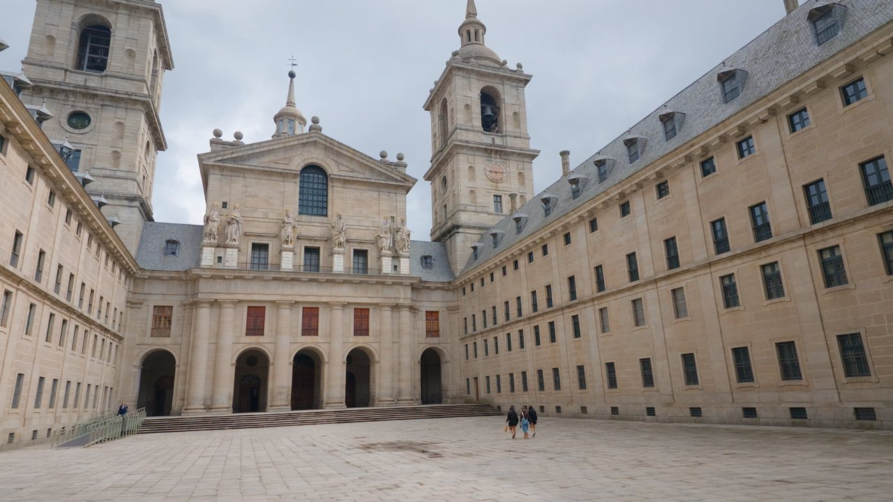
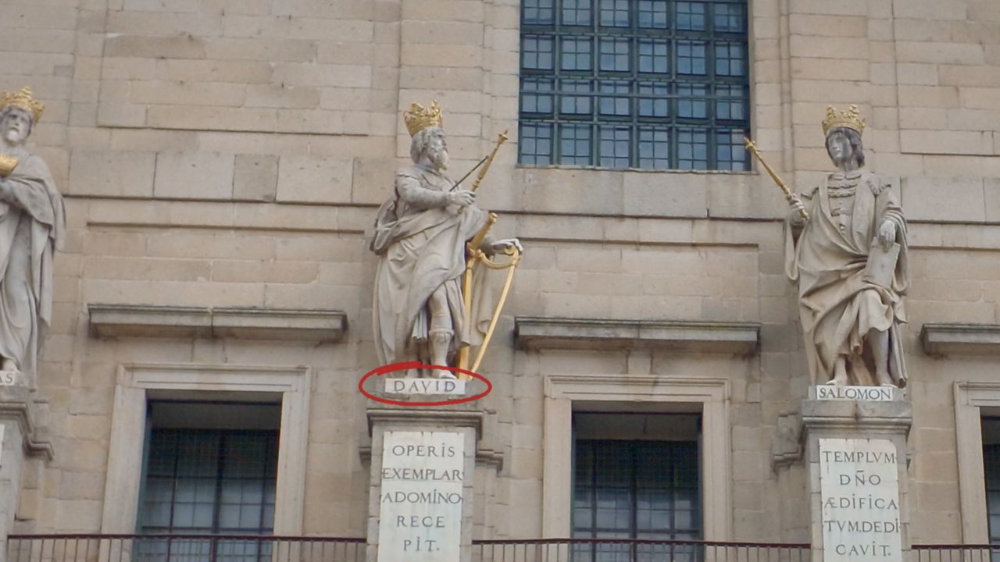
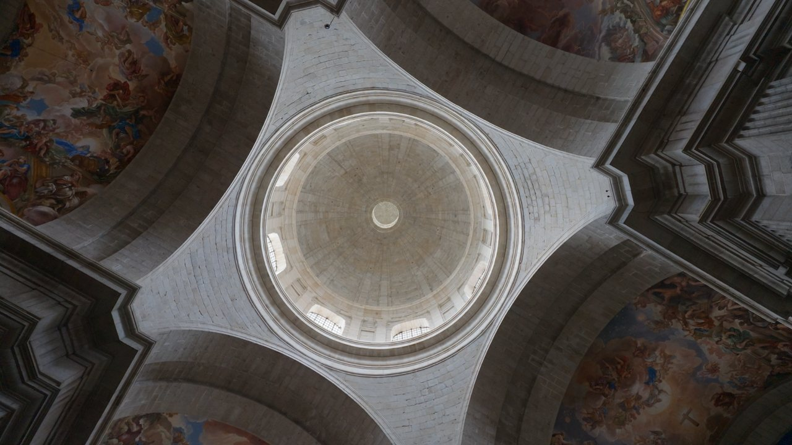
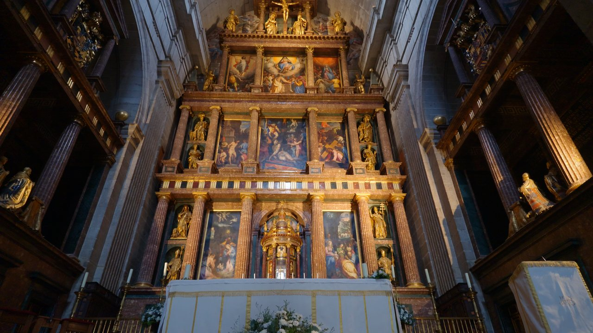
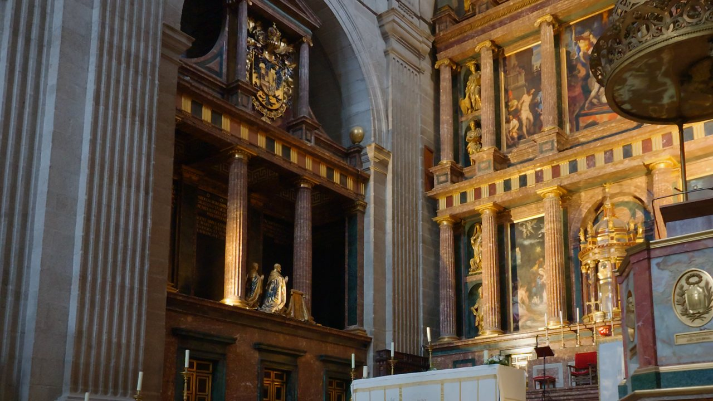
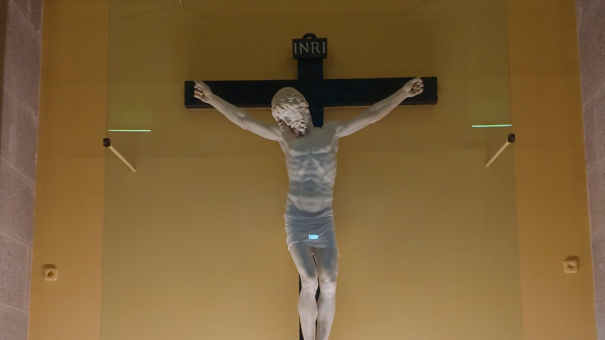
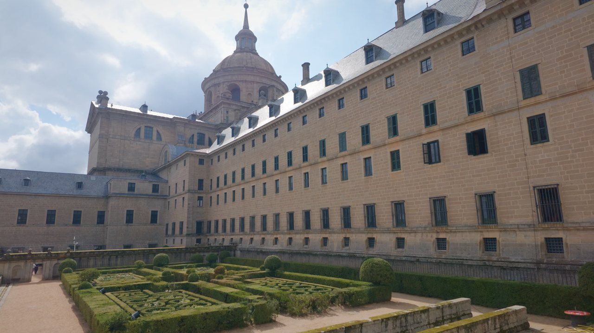

01
El Patio de los Reyes
Es la puerta de la visita. Al fondo, la fachada de la basílica y, sobre ella, seis reyes de Judá de Juan Bautista Monegro: de granito, con las cabezas y las manos de mármol.
Lo que no te puedes perder en el monasterio de Felipe II, y cómo organizar la visita.
El recorrido completo en 4 minutos. Al darle al play se carga YouTube. Verlo en YouTube

Es la puerta de la visita. Al fondo, la fachada de la basílica y, sobre ella, seis reyes de Judá de Juan Bautista Monegro: de granito, con las cabezas y las manos de mármol.

Josafat, Ezequías, David, Salomón, Josías y Manasés. El que lleva arpa tiene su nombre en el pedestal. Mi tocayo lleva más de cuatro siglos esperando ahí arriba: no te vayas sin saludarle.

Planta de cruz griega, pilares colosales y una cúpula a más de noventa metros del suelo. Por fuera todo es granito; por dentro, el color: casi todas las bóvedas las pintó al fresco Luca Giordano a finales del siglo XVII.

Ponte debajo del crucero y levanta la vista: la cúpula y las pechinas pintadas son de las mejores fotos de la visita (sin flash, que no se permite).

Unos veintiséis metros de jaspes, mármoles y bronce dorado. Lo trazó Juan de Herrera, con esculturas de Pompeo Leoni y lienzos de Tibaldi y Zuccaro.

A los lados del altar, en bronce dorado y de rodillas, Carlos V y Felipe II con sus familias, mirando al altar para siempre. Y bajo ese altar, en el Panteón de Reyes, descansan casi todos los reyes de España desde Carlos I.

Mármol de Carrara, 1559–1562. Benvenuto Cellini lo talló para su propia tumba y acabó aquí, regalo de los Médici a Felipe II. Está en una capilla lateral: mucha gente pasa de largo.

Para terminar: boj recortado, estanques y la cúpula vigilando desde arriba. En esta temporada abren hasta las 18:00.
La entrada general también incluye espacios como la Biblioteca, las Salas Capitulares o los Palacios de los Austrias y de los Borbones. Algún día puede haber salas cerradas: compruébalo antes de ir.
Horario de octubre a marzo. Datos de Patrimonio Nacional, consultados el 16 de octubre de 2026. En verano cambian: compruébalos antes de ir.